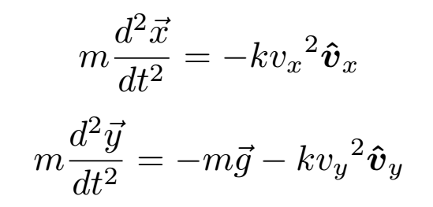

Projectiles in Atmospheres
Code for this project can be found here. Requires the Python modules: tkinter, numpy, matplotlib and scipy.
One of the first problems that are studied by new physics students is that of the projectile. A projectile is an object that is launched from a certain point (e.g. a cannon), and is then allowed to move
under gravity. Usually, the goal is to calculate how the projectile will move after being launched. In other words, we want to find its position at any given point in time. To do this we can solve the
projectile's equation of motion. This is an equation that we come up with using the following steps:
1. Add up all of the forces acting on the projectile.
2. Set these forces equal to the object's mass, multiplied by its acceleration.
The second step is a direct result of a physical law discovered by Isaac Newton, thus it is referred to as Newton's Second Law. Writing this as an equation:
Where ΣF is the sum of the forces, m is the mass, and a is the acceleration. Due to the fact that a is the second derivative of the position, r, with respect to time, this is a differential equation that can be solved to find position as a function of time.
In the case of the projectile, we need to find all of the forces acting on the projectile while in flight to find its position as a function of time. We can split these into forces that act in the horizontal direction and forces that act in the vertical direction. As the forces become one dimensional, we can thus drop the vector notations on F. We can also split r into its horizontal and vertical components, x and y.

Gravity always acts straight downwards, so it exerts no horizontal force on the projectile - only a vertical force, -mg. (The force is negative because we choose downward forces to be negative). Of course, since there is nothing touching the projectile, the only force acting on it is gravity...
Or is it?
Air Resistance
As it turns out, real life makes projectiles a bit more complicated. On Earth, gravity is not the only force that affects projectiles in flight. There is also air resistance or drag, which is the tendency of air to exert a force that opposes the motion or velocity of any object moving through the air. Since it opposes the velocity of a projectile, it can also have a horizontal component. It is proportional to the square of the velocity: If an object moves twice as fast, it will feel four times as much air resistance.
The hat on the v simply denotes a unit vector in the direction of the projectile's velocity, while k is a constant of proportionality. We can split up the components of the air resistance and add them to our equations of motion.
Even though we have only added one extra force, our equations look a lot more complicated now. The projectile now has a force acting on it that is proportional to the velocity squared, meaning that our differential equations are no longer linear. If that wasn't bad enough, the "constant" k actually changes with the projectile's height due to changing air density. Overall, finding a solution to these differential equations would take a long time by hand. While analytical solutions do exist in some cases, they are quite complicated to work with. This is why we usually ignore air resistance when we first learn how to calculate the trajectories of projectiles. At this point, the best thing to do is to put down our pens and pick up the keyboard - it's time to put the computer to work!
Numerical Solutions
When solving a differential equation analytically is difficult or impossible, we can let computers do the work for us. There are many algorithms that can give approximate solutions to the differential equations above, some more accurate than others. A simple example is Euler's method (see the Orbit Simulator page for an explanation of this). Most of the algorithms work by splitting the motion of the particle into many small jumps or "steps", and approximating the changes in position and velocity during each step. Given an initial position and velocity, this projectile simulator calculates the flight path of a projectile that experiences both the gravitational force and air resistance. It also shows the path of a projectile that only experiences gravity, for comparison. It is as if this projectile is in a vacuum. With no air attempting to slow it down, the vacuum projectile always travels further than the one feeling air resistance. This is especially noticeable if the starting velocity is very high, as the air resistance is much greater at high velocities. In the simulation at the start of the video above (in the first minute), the vacuum projectile travels just over 500m before first hitting the ground and bouncing back, while the "atmospheric" projectile doesn't even reach 400m before first hitting the ground. In the simulation shown in the last 20 seconds of the video, the starting velocity is much smaller, and so the difference in the two trajectories is not as pronounced.
Terminal Velocity
One interesting projectile problem that requires air resistance is "terminal velocity". This occurs when the projectile is falling downward. In this situation, the downwards force on the projectile due to gravity is balanced exactly by the upwards force from air resistance. The result is that the object falls with constant velocity. It is also the reason skydivers fall more slowly when they spread out their limbs. By increasing the area that the air hits as they fall, the overall air resistance is increased, resulting in a lower falling velocity.
In the video, a simulation that showcases this phenomenon begins at 1 minute, 25 seconds. The vacuum projectile is hidden so that its trajectory does not obscure that of the atmospheric projectile. The atmospheric projectile is allowed to fall straight down. As it does so, the number shown on its "Y Velocity" readout begins to increase (become more negative). However, as it gets faster and faster, the speed begins to increase more slowly. Though the projectile bounces off the ground, if it were allowed to fall indefinitely, its speed would approach a certain limit - the terminal velocity. In this case, the limit is about 78 m/s. It depends on a number of different factors, all of which can be edited in the project code.
The differential equations in this project are solved with scipy's integrate.odeint function.